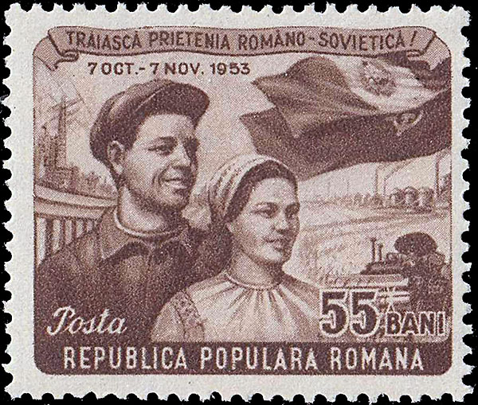
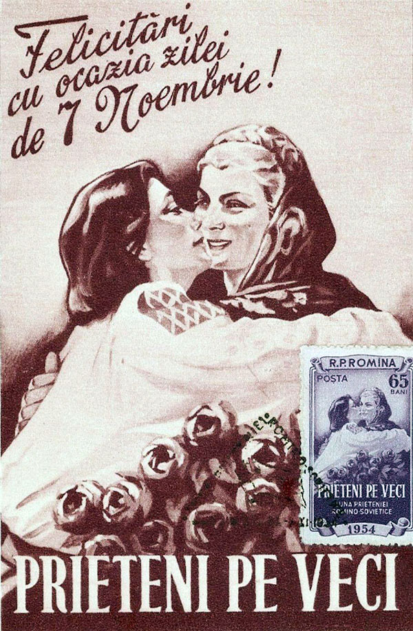
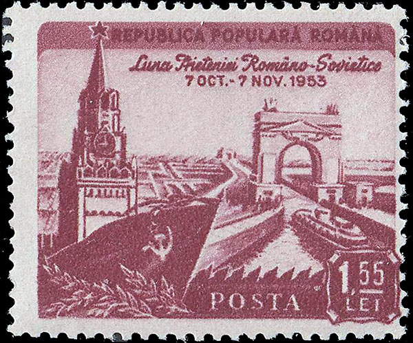
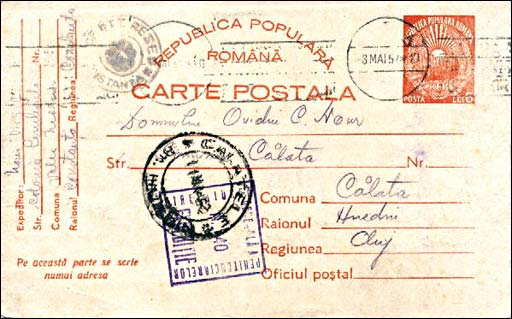

Usually this sort of title leads to an article about the horrors of Nazism. This page is a bit different. It deals with horrors which the mainstream of modern historians and philosophers try to evade or forget - the crimes of Communism in the 20th century. The reason for this evasion is simple to understand. Most of the intellectuals still believe that the basic ideas behind Communism are generous and that only the implementation failed. Different reasons are given: bad places, bad people, bad moments.
The purpose of this page is to illustrate, using some largely available philatelic materials, how Communism was imposed and what consequences it had for people who had its extermination machine. Of course, on Romanian propaganda stamps it appears as an expression of friendship between the Soviet occupant and the population of the occupied territory of Romania (for already ten years when the below stamp was issued, and which lasted until 1958).

For the sake of completeness we show below the maxicard issued by Romania in 1954 that celebrates again the Romanian - USSR friendship. On the top it is written: "Congratulations on the occasion of the 7th of November"! This date had no significance for the Romanian population but represented the celebration of the communist's putsch in Russia in 1917. Below it is written: "Friends forever."

For comparison, the horrible Nazism period had a total duration of about twelve years. Unfortunately, we hear much less about the fate of over a billion people who live today under communism. This short historical presentation, based on philatelic material, is therefore more relevant than ever. See below a maximum card of 1956, dedicated to the
ROMANIA, THE DANUBE - BLACK SEA CANAL
The working on this canal started at the beginning of the 1950's. The freshly installed Communist regime decided to enslave many people who it declared as enemies, obliging them to work in camps and silencing the rest of the population at the same time. The inspirers were the Soviets, who occupied Romania after the WW2, and who already built several canals by using so-called political prisoners, who were actually imprisoned to be used as brute force, under very harsh conditions. Below we show a Romanian stamp issued Nov. 25, 1953, Scott 975, that commemorates the Soviet-Romania Month of Friendship. On the right side it displays a lock on the Volga-Don canal.

The Canal was an immense concentration camp, with many thousands of prisoners. During those times a "political" joke was sufficient for rejoining the camps. Some of prisoners were not allowed to even use overcoats during the very cold local winters nor to receive medical aid. A lot of prisoners died of cold, inhuman working and living conditions, and lack of medical attention.
 |
 |
In 1951, in a set dedicated to the 1951-1955 Five Year Plan (a plan that failed miserably, like all others that followed), the 6 Lei value, shown above in its original and in an overprinted version of 1952, was dedicated to the Danube - Black Sea Canal (Scott 799-818, Michel 1276-1285). On the stamp one can read: "In the year 1955 the Danube - Black Sea canal will be put into operation."
Work was stopped in 1953 and, after a parody of a trial, two state-employed engineers, who weren't camp internees, were shot for allegedly sabotaging the project. It was a cover-up for the bad quality of the machinery imported from the USSR, a fact that none dared to admit. Interestingly enough, for a long period (approximately 1955 - 1990) this stamp was banned from the Romanian catalogues and from the state philatelic commerce. It was a sore reminder of a never finished canal - a project that those who had the power felt that it should be as soon as possible forgotten.
This sinister enterprise had many points of work. We will speak here only about one of them, named Peninsula. This forced work colony existed between 1951-1977, and it was named also the Extermination Camp No. 1. It was founded in the fall of 1950, in the North of the lake Siutghiol. on a peninsula that enters the lake, 5 Km away from the village Valea Neagra (Black Valley). Three years later the village was renamed The Light. About 8'000 people worked there (possible not only prisoners). The colony functioned also after the Canal works were closed. Between 1953-4 this was a camp for people who were imprisoned for non-denunciation, passing of the border, illegal wearing of arms. Closed in 1954, the camp was opened in 1955 for the common criminals, and it functioned till 1977.

See above a post card, sent from the Colonia Peninsula, village Valea Neagră, censored by a square cancel with the number 40, passed by the distribution point Constanta the 8th of May.1952 and arrived at Calatele the 11th of May.1952. From the text: please send 4 white undershirts, 2 pairs of tennis shoes or sandals, brush, tooth paste and laundry soap. When you can, send also foodstuff (ten Kg). In each pack 100 cigarettes. (Many thanks to Dan Grecu for his kind permission to reproduce as well the card, as the text referring to it and to the Peninsula).
Thirty years later, more exactly in October 1975, the Romanian President Ceausescu, a loyal follower of those criminals who preceded him as rulers, restarted this megalomaniac project and, spending billions of dollars that his starving country badly needed, succeeded in finishing the works. At the time the project was restarted, water transportation had already begun being replaced by road transport, a development that only accelerated later and made the whole investment useless. The works started on another route, south of the city of Constanta, and they were finished in 1981. Later was also finished the section Poarta Alba - Midia - Navodari, one that practically followed the route of the old Canal.
The souvenir sheet presented below on a FDC (1985, Scott 3270, Michel 216) still evokes bad souvenirs to many Romanians. It shows the opening ceremony in Cernavoda, where the former President and the General Secretary of the Romanian Communist Party, Nicolae Ceausescu and his wife Elena (both executed five year later) inaugurated the new canal.

Please note on the material presented above the evolution of the name of the country from Republica Populara Romana toward the Republica Socialista Romania. Neither translation nor further comments are necessary.
And for closing a true story, told by an older friend of mine, who experienced about 10 years of Romanian prisons and camps. One day the camp's boss, who appeared to be sympathetic to him, recommended him to destroy his blanket, this before leaving that camp for another one, what he did. For this act he was beaten by the guards and then he couldn't understand why that boss gave his such a bad piece of advice. Much later he will learn that his wife, who was free, was asked by some state run administration to pay for the good destroyed by her husband. Thus she learned, after two years, that her husband was still alive. She wasn't said either about the place of his detention or about the detention itself.